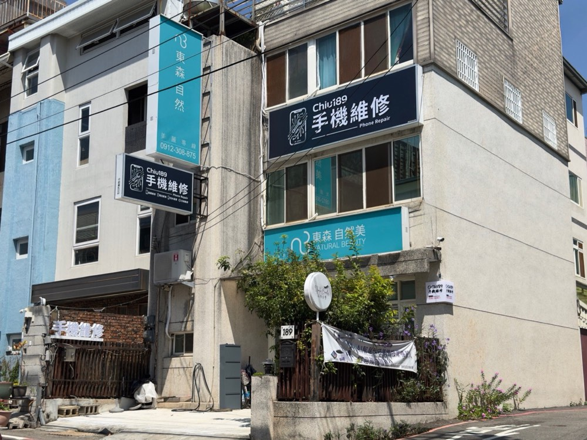
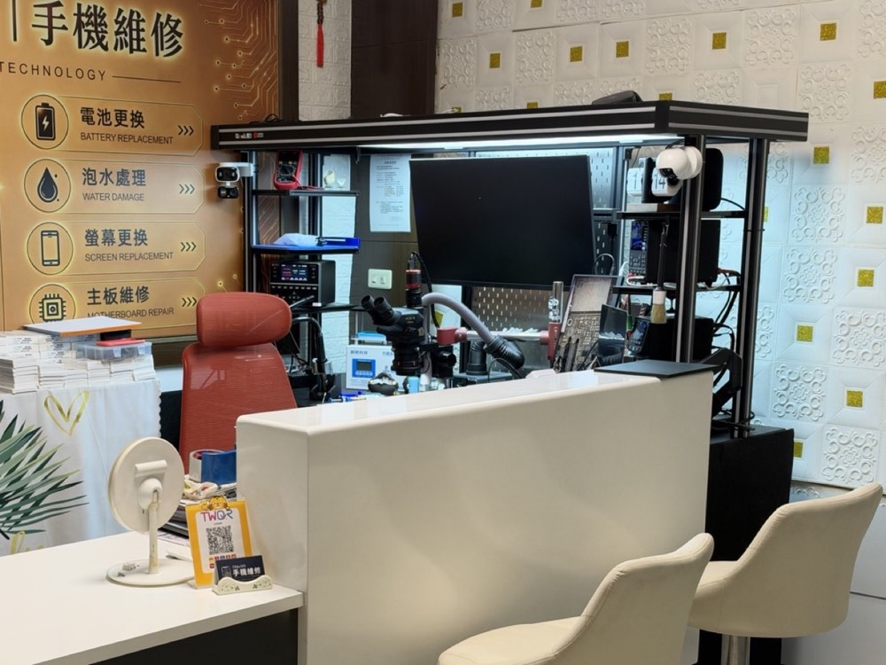

CHIU189 手機維修中心
關於本店
店面、技術設備、零件說明與商號資料。



我們是誰
CHIU189 是一間在台中龍井東海商圈的實體手機維修店。除了常見的螢幕、電池更換，我們更擅長處理不開機、進水這類需要拆到主機板的問題。
技術與設備
老闆在大陸接受晶片級維修專業進修，並在同業維修中心實戰後，回台開設這間維修中心。遇到不開機、進水這類問題，我們會先找出真正壞掉的零件，能修小零件就不換整片主機板。詳細說明請看 主機板晶片級維修。
- 立體顯微鏡、微焊接與植錫設備，可做晶片拆焊與飛線
- 直流電源供應器、尾插檢測儀，量電流判斷故障位置
- 主機板電路圖與點位圖軟體，對照原廠線路查修
- 防靜電工作台與專用工具
零件與透明度
報價時會說清楚使用哪一種零件（例如同規格或副廠螢幕）、價差在哪裡，由您自己選。iPhone 更換螢幕、電池等零件後，設定裡可能出現「非原廠零件」提示，我們會事先告訴您。
商號資料
| 店名 | CHIU189 手機維修中心 |
|---|---|
| 登記名稱 | |
| 統一編號 | |
| 地址 | 臺中市龍井區東海里遠東街189號（東海商圈） |
| 電話 | 0905-584-846 |
| 營業時間 | 週二～週日 12:00–22:00（週一公休） |
| LINE | @891llnje（點我加好友） |
| facebook.com/chiu189repair | |
| @chiu189_2017 |